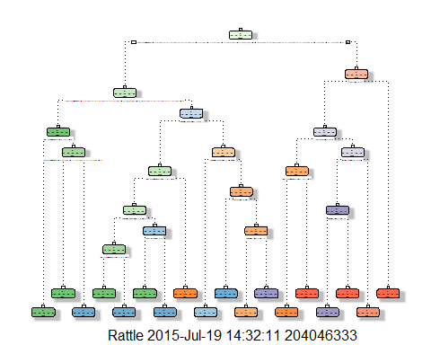

Machine Learning Project
Using devices such as Jawbone Up, Nike FuelBand, and Fitbit it is now possible to collect a large amount of data about personal activity relatively inexpensively. These type of devices are part of the quantified self movement - a group of enthusiasts who take measurements about themselves regularly to improve their health, to find patterns in their behavior, or because they are tech geeks. One thing that people regularly do is quantify how much of a particular activity they do, but they rarely quantify how well they do it. In this project, your goal will be to use data from accelerometers on the belt, forearm, arm, and dumbell of 6 participants. They were asked to perform barbell lifts correctly and incorrectly in 5 different ways. More information is available from the website here: http://groupware.les.inf.puc-rio.br/har (see the section on the Weight Lifting Exercise Dataset).
The training data for this project are available here:
https://d396qusza40orc.cloudfront.net/predmachlearn/pml-training.csv
The test data are available here:
https://d396qusza40orc.cloudfront.net/predmachlearn/pml-testing.csv
The data for this project come from this source: http://groupware.les.inf.puc-rio.br/har. If you use the document you create for this class for any purpose please cite them as they have been very generous in allowing their data to be used for this kind of assignment.
The goal of your project is to predict the manner in which
they did the exercise. This is the "classe" variable in the training
set. You may use any of the other variables to predict with. You should create
a report describing how you built your model, how you used cross validation,
what you think the expected out of sample error is, and why you made the
choices you did. You will also use your prediction model to predict 20
different test cases.
1. Your submission should consist of a link to a Github repo with your R
markdown and compiled HTML file describing your analysis. Please constrain the
text of the writeup to < 2000 words and the number of figures to be less
than 5. It will make it easier for the graders if you submit a repo with a
gh-pages branch so the HTML page can be viewed online (and you always want to
make it easy on graders :-).
2. You should also apply your machine learning algorithm to the 20 test cases
available in the test data above. Please submit your predictions in appropriate
format to the programming assignment for automated grading. See the programming
assignment for additional details.
##Reproducibility
Due to security concerns with the exchange of R code, your code will not be run
during the evaluation by your classmates. Please be sure that if they download
the repo, they will be able to view the compiled HTML version of your analysis.
Before looking at data, we want to install the appropriate packages and set the seed to ensure the results are reproducible.
library(caret)
##
Loading required package: lattice
## Loading required
package: ggplot2
library(randomForest)
##
randomForest 4.6-10
## Type rfNews() to see
new features/changes/bug fixes.
library(rpart)
library(rpart.plot)
library(RColorBrewer)
library(rattle)
##
Rattle: A free graphical interface for data mining with R.
## Version 3.4.1 Copyright
(c) 2006-2014 Togaware Pty Ltd.
## Type 'rattle()' to
shake, rattle, and roll your data.
set.seed(12345)
Due to firewall issues, the data files have been downloaded to a local drive and will be pulled into RStudio from the local location. The source of the data can be found in the assignment outline listed above.
training_raw
<- read.csv(("pml-training.csv"), na.strings=c("NA","#DIV/0!", ""))
testing_raw <- read.csv(("pml-testing.csv"), na.strings=c("NA","#DIV/0!", ""))
Next, we need to partition the training data into 60% training and 40% testing
training_in
<-createDataPartition(y=training_raw$classe, p=0.60, list=FALSE)
training_working
<-training_raw[training_in,]; testing_working
<-training_raw[-training_in,]
dim(training_raw); dim(training_working); dim(testing_working)
## [1] 19622 160
## [1] 11776 160
## [1] 7846 160
The last step of prepping the data is to clean the data set up. First, we will look for near zero variance variables.
training_nzv
<- nearZeroVar(training_working, saveMetrics=TRUE)
nzvvars <- names(training_working) %in% c("new_window", "kurtosis_roll_belt", "kurtosis_picth_belt",
"kurtosis_yaw_belt", "skewness_roll_belt", "skewness_roll_belt.1", "skewness_yaw_belt",
"max_yaw_belt", "min_yaw_belt", "amplitude_yaw_belt", "avg_roll_arm", "stddev_roll_arm",
"var_roll_arm", "avg_pitch_arm", "stddev_pitch_arm", "var_pitch_arm", "avg_yaw_arm",
"stddev_yaw_arm", "var_yaw_arm", "kurtosis_roll_arm", "kurtosis_picth_arm",
"kurtosis_yaw_arm", "skewness_roll_arm", "skewness_pitch_arm", "skewness_yaw_arm",
"max_roll_arm", "min_roll_arm", "min_pitch_arm", "amplitude_roll_arm", "amplitude_pitch_arm",
"kurtosis_roll_dumbbell", "kurtosis_picth_dumbbell", "kurtosis_yaw_dumbbell", "skewness_roll_dumbbell",
"skewness_pitch_dumbbell", "skewness_yaw_dumbbell", "max_yaw_dumbbell", "min_yaw_dumbbell",
"amplitude_yaw_dumbbell", "kurtosis_roll_forearm", "kurtosis_picth_forearm", "kurtosis_yaw_forearm",
"skewness_roll_forearm", "skewness_pitch_forearm", "skewness_yaw_forearm", "max_roll_forearm",
"max_yaw_forearm", "min_roll_forearm", "min_yaw_forearm", "amplitude_roll_forearm",
"amplitude_yaw_forearm", "avg_roll_forearm", "stddev_roll_forearm", "var_roll_forearm",
"avg_pitch_forearm", "stddev_pitch_forearm", "var_pitch_forearm", "avg_yaw_forearm",
"stddev_yaw_forearm", "var_yaw_forearm")
training_working
<-training_working[!nzvvars]
dim(training_working)
## [1] 11776 100
Next, we will eliminate the first ID variable so as it will not interfere with algorithms to be run later in this analysis
training_working <- training_working[c(-1)]
Now, to clean up the variables with more than 60% NAs for data.
training_working2
<- training_working #creating another subset to
iterate in loop
for(i in 1:length(training_working)) { #for every column in the
training dataset
if( sum( is.na( training_working[, i] ) ) /nrow(training_working) >= .6 ) { #if n?? NAs > 60% of total
observations
for(j in 1:length(training_working2)) {
if( length( grep(names(training_working[i]), names(training_working2)[j]) ) ==1) { #if the columns are the same:
training_working2 <- training_working2[ , -j] #Remove that column
}
}
}
}
#To check the new set of
observations
dim(training_working2)
## [1] 11776 58
training_working<-training_working2
rm(training_working2)
Now to repeat the same clean up, but on the testingdata_raw and testingdata_working data sets.
clean1
<-colnames(training_working)
clean2 <-colnames(training_working[,-58])#classe already removed
testing_working<-testing_working[clean1]
testing_raw <- testing_raw[clean2]
dim(testing_working)
## [1] 7846 58
dim(testing_raw)
## [1] 20 57
We also need to coerce the data into the same type:
for
(i in 1:length(testing_raw) ) {
for(j in 1:length(training_working)) {
if( length( grep(names(training_working[i]), names(testing_raw)[j]) ) ==1) {
class(testing_raw[j]) <- class(training_working[i])
}
}
}
#And a check:
testing_raw <- rbind(training_working[2, -58] , testing_raw) #note row 2 can be removed:
testing_raw <- testing_raw[-1,]
Creating a decision tree with fancy
modFitA1
<-rpart(classe ~ ., data=training_working, method="class")
fancyRpartPlot(modFitA1)

Create a confusion matrix to test the results:
predictionsA1
<- predict(modFitA1, testing_working, type="class")
confusionMatrix(predictionsA1,testing_working$classe)
##
Confusion Matrix and Statistics
##
## Reference
## Prediction A
B C D E
## A 2150
60 7 1 0
## B 61
1260 69 64 0
## C 21 188
1269 143 4
## D 0
10 14 857 78
## E 0
0 9 221 1360
##
## Overall Statistics
##
##
Accuracy : 0.8789
## 95%
CI : (0.8715, 0.8861)
## No Information
Rate : 0.2845
## P-Value [Acc
> NIR] : < 2.2e-16
##
##
Kappa : 0.8468
## Mcnemar's Test P-Value
: NA
##
## Statistics by Class:
##
##
Class: A Class: B Class: C Class: D Class: E
##
Sensitivity 0.9633 0.8300 0.9276 0.6664 0.9431
##
Specificity 0.9879 0.9693 0.9450 0.9845 0.9641
## Pos Pred
Value 0.9693 0.8666 0.7809 0.8936 0.8553
## Neg Pred
Value 0.9854 0.9596 0.9841 0.9377 0.9869
##
Prevalence 0.2845 0.1935 0.1744 0.1639 0.1838
## Detection
Rate 0.2740 0.1606 0.1617 0.1092 0.1733
## Detection
Prevalence 0.2827 0.1853 0.2071 0.1222 0.2027
## Balanced
Accuracy 0.9756 0.8997 0.9363 0.8254 0.9536
modFitB1
<- randomForest(classe ~., data=training_working, method="class")
#predicting in sample
error:
predictionsB1 <-predict(modFitB1, testing_working, type="class")
#using confusion matrix
to test results:
confusionMatrix(predictionsB1, testing_working$classe)
##
Confusion Matrix and Statistics
##
## Reference
## Prediction A
B C D E
## A 2231
2 0 0 0
## B 1
1516 1 0 0
## C 0 0
1366 3 0
## D 0
0 1 1282 1
## E 0
0 0 1 1441
##
## Overall Statistics
##
##
Accuracy : 0.9987
## 95%
CI : (0.9977, 0.9994)
## No Information
Rate : 0.2845
## P-Value [Acc
> NIR] : < 2.2e-16
##
##
Kappa : 0.9984
## Mcnemar's Test
P-Value : NA
##
## Statistics by Class:
##
## Class:
A Class: B Class: C Class: D Class: E
##
Sensitivity 0.9996 0.9987 0.9985 0.9969 0.9993
##
Specificity 0.9996 0.9997 0.9995 0.9997 0.9998
## Pos Pred
Value 0.9991 0.9987 0.9978 0.9984 0.9993
## Neg Pred
Value 0.9998 0.9997 0.9997 0.9994 0.9998
##
Prevalence 0.2845 0.1935 0.1744 0.1639 0.1838
## Detection
Rate 0.2843 0.1932 0.1741 0.1634 0.1837
## Detection
Prevalence 0.2846 0.1935 0.1745 0.1637 0.1838
## Balanced
Accuracy 0.9996 0.9992 0.9990 0.9983 0.9996
As you can see, Random Forest results gives a much more accurate answer. Confusion Matrix gives an accuracy of 87.89%, whereas the Random Forest gives 99.87%. Next, we will generate predicitons for all 20 test cases using the Random Forest model.
Using the out of sample test set error, we can use the Random Forest, which gave a better result for the in sample data and create our files.
predictionsB2
<-predict(modFitB1, testing_raw, type="class")
pml_write=function(x){
n=length(x)
for(i in 1:n){
filename=paste0("problem_id_", i, ".txt")
write.table(x[i], file=filename, quote=FALSE, row.names=FALSE, col.names=FALSE)
}
}
pml_write(predictionsB2)